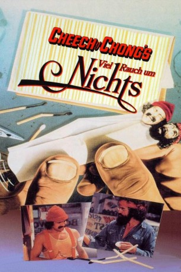

#11900 Viel Rauch um Nichts
Alternativ: Up in Smoke (Englischer Titel)
 
 IMDB-Wertung: 7.0 / 10
IMDB-Wertung: 7.0 / 10  Tomatometer: 47
Tomatometer: 47  Metascore: 57
Metascore: 57 
Pedro De Pacas und Anthony 'Man' Stoner sind zwei Taugenichtse, die es zu nicht viel im Leben gebracht haben. Cheech ist ein Ausreißer, der auf der Flucht vor seinem Elternhaus ist und Chong will unbedingt Musiker werden und sucht deshalb nach einem Drummer für seine zukünftige Band. Die beiden begegnen sich zufällig auf einer Landstraße und werden schnell Freunde, denn es verbindet sie eine Leidenschaft – die Liebe zum Marihuana. Doch genau das wird ihnen zum Verhängnis, als sie wegen eines Joints von der Polizei hochgenommen werden. Doch davon lassen sich die beiden nicht unterkriegen. Es beginnt ein wahnsinniger Road-Trip, der die beiden nach Tijuana und mit einem LKW voller Gras Richtung Los Angeles führt, wo sie bei einem Band-Contest mit ihrer heißen Ladung etwas Schwung ins Publikum bringen wollen…
Jahr: 1978
Dauer: 82 Minuten
FSK: 12
Land: USA Studio: Paramount PicturesTonspuren: DD2.0 - , DD5.1 - ,
Untertitel: Deutsch, Englisch,
Auflösung: SD (720x576) Größe: 5314 MB
Genre: Musik, Komödie
Regisseur: Lou Adler, Tommy Chong
Drehbuch: Tommy Chong, Cheech Marin
Soundtrack:
Darsteller:
 Cheech Marin als Pedro
Cheech Marin als Pedro Tommy Chong als Man
Tommy Chong als Man Strother Martin als Mr. Stoner
Strother Martin als Mr. Stoner- Edie Adams als Tempest Stoner
- Arthur Roberts als Arresting Officer
- Donald Hotton als Bailiff
- Ray Vitte als The Band: Bass - James
- Gary Mule Deer als Freak with Basketball
 Tom Skerritt als Strawberry
Tom Skerritt als Strawberry- June Fairchild als Ajax Lady
 Stacy Keach als The Narcs: Sergeant Stedenko
Stacy Keach als The Narcs: Sergeant Stedenko- Mills Watson als The Narcs: Harry
- Karl Johnson als The Narcs: Clyde
- Cheryl Smith als Laughing Lady
 Val Avery als The Hoods: Factory Boss
Val Avery als The Hoods: Factory Boss- Marcia Wolf als The Nuns: Sister Mary Vogue
- Betty McGuire als The Nuns: Sister Mary Quacker
- Zane Buzby als Jade East
- Louisa Moritz als Gloria
- Rodney Bingenheimer als Rodney Bingenheimer
- David Nelson als Roxy Doorman
 Harry Dean Stanton als Police Officer (scenes deleted)
Harry Dean Stanton als Police Officer (scenes deleted) Ellen Barkin als Woman Playing Guitar (uncredited)
Ellen Barkin als Woman Playing Guitar (uncredited) David Daniel als Stoner (uncredited)
David Daniel als Stoner (uncredited)- Sheri Effres als Concert Attendee (uncredited)
- Harold Fong als Chauffeur
- Richard Novo als Richard
- Jane Moder als Jail Bait
- Pam Bille als Jail Bait
- Marian Beeler als Judge Gladys Dykes
- John Ian Jacobs als Prosecuting Attorney
- Christopher Joy als Curtis
- Michael Caldwell als The Band: Guitar - Duane
- José Pulido als The Band: Horns: 1st Trumpet - Juan
- Ruben Guevara als The Band: Horns: 2nd Trumpet - Tom
- Miguel Murillo als The Band: Horns: 3rd Trumpet - Ollie
- Rick Beckner als The Narcs: Murphy
- Angelina Estrada als Aunt Bolita
- Ernie Fuentes als Upholstery Shop Foreman
- Ben Marino als The Hoods: Benny
- Akemi Kikumura als The Hoods: Toyota Kawasaki
- Joe Creaghe als The Hoods: Border Guard
- Roy Stocking als The Hoods: Border Guard
- Andrea Nachman als The Nuns: Sister Mary Secretary
- Cheryl Jeffrey als The Nuns: Sister Mary Arabian
- Gayna Shernen als The Nuns: Sister Mary Mary
- June Creeghe als The Nuns: Sister Mary Yuma
- Patty Proudfoot als The Nuns: Sister Mary Indian
- Wally Ann Wharton als Debbie
- Otto Felix als Motorcycle Cop
Datei: X:\1978\Viel Rauch um Nichts (1978, FSK12, 720x576).mkv seit 08.10.2019
Festplatte: Gemischt-01+Anime
 Es gibt insgesamt 31 Filme in der Gruppe '1978'
Es gibt insgesamt 31 Filme in der Gruppe '1978'